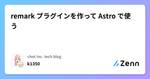
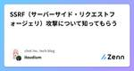
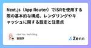

chot Inc. tech blogのフィード
https://zenn.dev/p/chot
ちょっと株式会社（https://chot-inc.com）のエンジニアブログです。 フロントエンドエンジニア募集中！ カジュアル面接申し込みはこちらから https://chot-inc.com/recruit/iuj62owig
フィード

remark プラグインを作って Astro で使う 1
1
chot Inc. tech blogのフィード
モチベーション私は個人サイトのコンテンツをすべて自分で管理しておきたい気持ちがあるので、基本的にコンテンツを markdown で書いている。Astro では MDX integration を使うと markdown 内で Astro コンポーネントを使えるので、markdown で表現できない部分は Astro コンポーネントを使っていた。しかし何となく違和感があったし、せっかく markdown という標準的な記法を採用しているのに Astro にロックインされてしまうのも嫌だった。そんな中、最近 remark/rehype プラグインを作って markdown を拡張...
2日前
CapacitorJSで始めるアプリ開発 2
chot Inc. tech blogのフィード
はじめにWebアプリをモバイルアプリ化するツールとして、CapacitorJSを紹介します。CapacitorJSはクロスプラットフォーム開発のためのライブラリです。既存のWebアプリをiOSやAndroidアプリとして展開することや、Web技術でアプリ開発が可能です。今回は、CapacitorJSを使ってReactで作ったWebアプリをiOSアプリとAndroidアプリにする方法と実際に運用する上でのTipsを紹介します。 Reactアプリの作成まずは、Reactアプリを作成します。Viteのドキュメントに沿ってReact-tsプロジェクトを作成します。pnpm ...
3日前

SSRF（サーバーサイド・リクエストフォージェリ）攻撃について知ってもらう 1
chot Inc. tech blogのフィード
あなたのWebサービスは大丈夫？私は、古いWebサイトのリニューアルに携わった経験のなかで、いくつかのSSRF脆弱性を目にしてきました。最近では、フロントエンドエンジニアがサーバーコードを書くことも普通にあるので、SSRFの脆弱性について理解を深めましょう。 SSRF (Server Side Request Forgery)SSRF,サーバーサイド・リクエストフォージェリは、サーバーに成り代わりリクエスト送信を強要する攻撃手法とその脆弱性です。CSRFもそうですが、*RF攻撃は、その送信者に特有の権限を使って、本来意図していない細工したリクエストを送信させることで成立します...
11日前

Next.js（App Router）でISRを使用する際の基本的な構成、レンダリングやキャッシュに関する設定と注意点 1
chot Inc. tech blogのフィード
App RouterでISRを実装したけれど、十分にキャッシュが作られていない問題が起こったことがありました。具体的にはVercelのUsageにあるData CacheでIncremental Static Regenerationの割合が少なく、Vercel Data Cacheの割合がかなり多くなっていたことです。原因はNext.jsにおけるISRの要件を満たせていなかったこと。公式ドキュメントを改めて読み返してみれば書いてあったのですが、問題が起こらないと気づけないことも多いなと実感しました。この記事ではNext.jsのApp RouterでISRを実装する際の基本的な構成...
11日前

ESLintをより強力に！eslint-plugin-unicornとeslint-plugin-perfectionistの活用法
chot Inc. tech blogのフィード
はじめにESLintはJavaScriptやTypeScriptのコード品質を向上させるためのツールですが設定に悩むことも多いです本記事ではESLintの設定をシンプルかつ強力にするための2つのプラグインeslint-plugin-perfectionistとeslint-plugin-unicornを紹介しますこれらのプラグインを使うことで、手間をかけずに厳格なコードチェックを実現できます！ eslint-plugin-perfectionistとはeslint-plugin-perfectionistはオブジェクト、インポート、型、列挙型、JSXプロパティなどのデータ...
14日前
Next.jsの画像周りのキャッシュ戦略について調べる
chot Inc. tech blogのフィード
!本記事は社内勉強会の資料をベースにしています。Next.jsの画像最適化機能であるnext/imageは画像の読み込み方法として２種類あります。import Image from "next/image";import stinCatJpg from "./stin_cat.jpg";// 画像をJavaScriptモジュールのように扱い、指定する形式<Image src={stinCatJpg} alt="stin cat" />;// img要素同様に文字列を指定する形式<Image src="/stin_cat.jpg" alt="stin...
16日前
「Google 検索セントラル」から学ぶ、ページネーションを実装する前に検討しておくこと
chot Inc. tech blogのフィード
プロジェクトでページネーションまわりの改修を担当した時に「Google 検索セントラル」やその他の記事を読んで、知ったことや考えたことをまとめてみました。「どのようなライブラリを使うおうか」と調べ始める前に、知っておくべき前提知識を収集しておくのは大切だなと気づいたので、この記事がその一助となれば嬉しいです。 ページネーションのUI 最初と最後のリンクを常に表示する各ページに最初のページへ戻るリンクを設定し、Google に対して一連のページの始点を示すこともおすすめします。これにより、ページ列中で最初のページが他のページよりもリンク先ページとして適しているというヒントを ...
18日前
VercelのEdge Requestに課金が発生している！
chot Inc. tech blogのフィード
!2024年7月時点の記事です。 はじめにとある日のメール。「何か100％いって従量課金始まっているなぁ…」と不思議に思い調べていたところ、VercelのProプランの新料金体系の発表が4月にあり、そこから約2ヶ月後の6月分（5/25〜6/25）から新料金体系になっていたことが分かりました。https://vercel.com/blog/improved-infrastructure-pricing今回の新料金体系で、「帯域幅（bandwidth）」と「機能（functions）」が細分化され、より具体的な項目に料金がかかるようになりました。以下はVercelからのお...
23日前
クライアント・サーバー間の一貫したバリデーション管理: Conform + Server Actions
chot Inc. tech blogのフィード
はじめに 🚩フォームの状態管理やクライアントサイドのバリデーションには、React Hook Form（RHF）がよく採用されると思います。しかし、RHF の Server Actions サポートは現在実験的な段階にあり、開発が停滞しています。https://github.com/react-hook-form/react-hook-form/pull/11061一方、Conform はすでに Server Actions に対応しています。そこで本記事では、React 19/ Next.js 15 の環境で Conform と Server Actions 使って、クライア...
24日前
空世界 〜HTMLの永遠仕様探訪記、或いは、文字なきsrcにまつわる寥々たる考察について〜
chot Inc. tech blogのフィード
問題<img src=""> をブラウザで表示した時、どうなるか知っていますか？わざわざimg要素のsrc属性を空文字列にする機会がないので意外と知らないかもしれません。もちろん画像は表示されず、(指定していれば)altが表示されます。img要素のsrc属性を空文字列にすると、リンク切れになることがわかりました！いかがでしたか？(？) そのときHTMLImageElementはJavaScriptでsrcが空文字列のimg要素のDOMインスタンスを確認してみましょう。例として https://zenn.dev/stin を開き、Chrome開発者ツールを使っ...
1ヶ月前
ravixUI がアクセシビリティ対応の参考になりそう
chot Inc. tech blogのフィード
まえがきAstro のブログではコミュニティ発のライブラリも紹介されているのですが、What's new in Astro - June 2024 でAn open-source, accessibility-focused component starter kit built with Tailwind CSS and optimized for Astroと紹介されていた ravixUI がアクセシビリティに配慮したマークアップの参考になりそうだったので紹介します。 ravixUI とはTailwind CSS によってスタイリングされ、特に Astro 用に最...
1ヶ月前
Vercel Meetup #1 Panel Discussion Summary
chot Inc. tech blogのフィード
はじめに2024年6月25日に開催されたVercel Meetup #1でパネルディスカッションしてきました。パネルディスカッションではVercel/Next.jsやWebに関連する質問に対して、VercelのVPoEであるLindsey Simonさん含め5名のパネラーが様々な回答をしました。この記事では5つの質問と印象的だった話題を要約して紹介したいと思います。 パネラーの紹介Lindsey Simon / リンゼイ・サイモンさん - VP of Engineering, VercelNicolas Ishihara / ニコラスさん - CSM Teams Le...
1ヶ月前
【React】useMediaQuery は最終手段にしよう
chot Inc. tech blogのフィード
こんにちは、エンジニアです。本記事ではuseMediaQueryを使うべきではない理由を説明します。 useMediaQueryとはwindow.matchMediaの判定結果を取得するカスタムフックを指します。const isWideScreen = useMediaQuery("(min-width: 768px)");window.matchMediaはCSSでできるメディアクエリの判定をJavaScriptでも可能にするブラウザAPIです。それをReact Hooksと組み合わせることで、宣言的に判定を行えるようなカスタムフックとなります。過去にuseSyncExt...
1ヶ月前
connpassの勉強会情報をDiscordへ通知する
chot Inc. tech blogのフィード
はじめにみなさんは勉強会やイベントはお好きですか？興味のある分野のLTや他社エンジニアの実体験をきくとモチベーションが上がりますし、エンジニア同士のつながりができるのも魅力だと思います👩🏼💻興味のある勉強会やイベントの情報を効率よく取得できるようDiscordを使って情報を得るシステムを構築しました。 つくったものDiscordにこのような感じでイベントが通知されます。本当はイベント画像もあるとよりイベントに興味も持ちやすく良かったのですがAPIからは取得できませんでした😮💨画像については引き続き取得方法を検討してみたいと思います。 使用する技術スタック...
1ヶ月前
マサラタウンにさよならバイバイ 俺はCursorと旅に出る
chot Inc. tech blogのフィード
こんにちわ！hanetsukiです。この記事はCursorが出た頃に一瞬使ってみて「う〜〜〜ん、なんかビミョい」となり、VSCodeに出戻ったフロントエンドエンジニアがもう一回Cursorを使い始めて長期的に使っていきそうな所感を感じたまとめ記事です。 Q.Cursorってなに？A.端的に申し上げますと、VSCodeにAI搭載したエディターです。https://www.cursor.com/VSCodeをフォークして開発されているので、見た目もまんまVSCodeです。 Q.なんでVSCodeに戻ったの？A.UIの微妙な差が気に食わなかったのです。過去のことなのでよくわ...
2ヶ月前
Radix UIのTooltipをタップでも表示する方法、あるいはホバーとフォーカスしか受け付けない理由
chot Inc. tech blogのフィード
Radix UIのTooltipで実装していたときに、モバイルでタップしてもポップアップが表示されず困ってしまったことがありました。なぜなら、デスクトップではホバー、モバイルではタップで表示されることが要件だったからです。この記事ではタップ操作でも表示できるようにした方法と、なぜタップ操作で表示できなくなっているかを紹介します。 Tooltipはアクションボタンに対するチップ（補足情報）を提示するUIIssueを探っているとRadix UIのUI Software Engineerであるbenoitgrelardさんがコメントしていました（Raycastの中の人でもある！）。...
2ヶ月前
Drupalを「知らない」から「ナニモワカラナイ」までの感想
chot Inc. tech blogのフィード
はじめにこんにちは！フロントエンドエンジニアのかこなーるです！私は最近、Drupalを用いた複数サイトの管理を行うプロジェクトに参画する機会がありました。今日は、その際に感じたDrupalの特徴や、学んだことについて共有したいと思います。 DrupalとはどういったCMSなのかDrupalは、高機能で柔軟性がありスケーラブルなCMSとして、多くの大規模なウェブサイトやアプリケーションで採用されています。高いカスタマイズ性とセキュリティ、豊富なモジュールとテーマによって様々なニーズに応じたウェブサイトを構築することができるということを特徴としたCMSです。Drupal シ...
2ヶ月前
React Hooksもりもり構成のチャット機能を考える[React 19 / Next.js 15]
chot Inc. tech blogのフィード
はじめに 🚩この記事では、Tanstack Query や SWR などのライブラリに頼らずに、React 標準の Hooks をふんだんに活用してチャット機能を実装する方法を紹介します。RC（Release Candidate）段階ではありますが、React 19 で追加された useActionState と useOptimistic を使うことで、よりインタラクティブで快適な UI/UX を実現する方法を探っていきます。また筆者の過去の記事ではそれぞれの Hooks に焦点を当てた記事を書いているので、そちらもあわせて参照してください。https://zenn.dev...
2ヶ月前
Hugo の記事をヘッドレスCMS で管理できる！ Content adapters 入門
chot Inc. tech blogのフィード
概要静的サイトジェネレーターである Hugo では、v0.126.0 にして遂にビルド時に動的に記事を生成する機能がリリースされました。それが Content adapters です。https://gohugo.io/content-management/content-adapters/今回は Content adapters を使い、microCMS で作成した記事データを用いたブログを作ってみます。環境hugo v0.126.2完成品https://github.com/k1350/hugo-microcms-sample説明することCon...
2ヶ月前
ユーザー操作のイベントかそうでないかを判定できるevent. isTrustedプロパティで意図しない動作を防ぐ
chot Inc. tech blogのフィード
イベントの伝播を防ぐのはstopPropagation()ですが、伝播するはずのない要素でイベントが走ってしまい動作不良が起きてしまうことがありました。そのときに問題の解消方法として採用したisTrustedプロパティを紹介します。 ユーザー操作かスクリプトで作成・変更されたかを返してくれるevent.isTrustedMDNには次のような説明があります。isTrusted は Event インターフェイスの読み取り専用プロパティで、このイベントがユーザー操作によって生成された場合は true、このイベントがスクリプトで作成または変更されたり、 EventTarget.di...
2ヶ月前